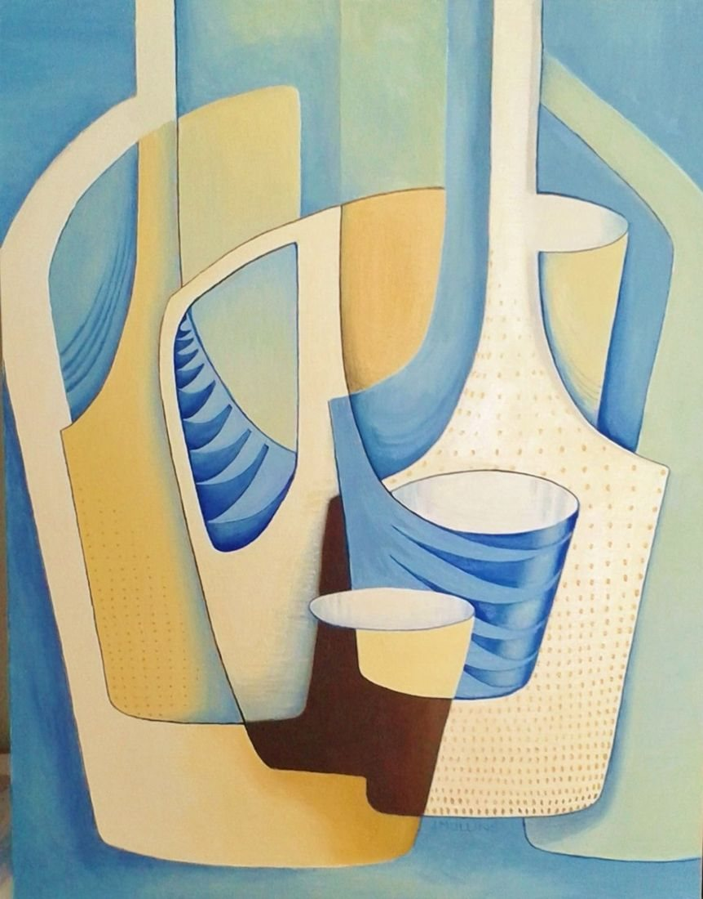

Select the picture to see it larger.
Bottles and mugs
- Medium
- Oil on canvas board
- Year
- 1970s
- Price
- Not for sale
- Catalogue no.
- 182
[A few lines from Joan about this painting]

Select the picture to see it larger.
[A few lines from Joan about this painting]
 Pencil Study of Shells
Pencil Study of Shells Still life with Cinque Port pottery
Still life with Cinque Port pottery The Spotty Bowl
The Spotty Bowl